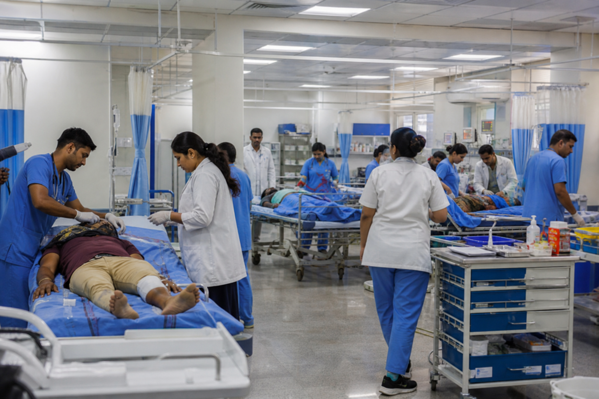

Strategic Planning
Hospital policies, long-term vision, and operational strategies aligned with institutional excellence.
Healthcare Executive Portfolio
Hospital Administrator · SNG Hospital, Indore
A distinguished healthcare leader with 13+ years of experience bridging clinical expertise and executive management — driving operational excellence, strategic growth, and uncompromising patient care standards.
Dr. Deepak Gurjar stands at the intersection of medicine and management — a Hospital Administrator who transforms complex healthcare environments into high-performing, patient-centered institutions.
With credentials spanning BAMS, CEMS & ED, and MBA, he brings rare dual competence: the clinical insight of a physician and the strategic acumen of a business executive.
The strategic functions that define exceptional hospital leadership at SNG Hospital
Hospital policies, long-term vision, and operational strategies aligned with institutional excellence.
Unified communication across medical, nursing, emergency, and support departments.
Financial planning, resource allocation, and cost-effective asset utilization.
Administrative team management, scheduling, and performance excellence culture.
Admission-to-discharge excellence and exceptional patient experience design.
NABH standards, safety protocols, and continuous quality improvement programs.

ED workflow coordination, disaster preparedness, and rapid response leadership.
Facility maintenance, technology upgrades, and hospital infrastructure development.
At SNG Hospital, Dr. Deepak Gurjar operates at the executive level — ensuring every department functions as a unified, high-performance healthcare institution.
Overnight admissions, bed occupancy, emergency cases, and daily priority setting.
Department head meetings, bottleneck resolution, and seamless patient flow.
Compliance metrics, patient feedback, safety audits, and corrective actions.
Management reports, resource planning, and alignment with SNG's mission.
The academic foundation of a healthcare executive
Bachelor of Ayurvedic Medicine and Surgery — clinical expertise that informs every administrative decision.
Certified Emergency Medicine Specialist credentials for critical care operations leadership.
Master of Business Administration — strategic planning, finance, and organizational leadership.
Comprehensive hospital management, accreditation, insurance, and operational excellence at SNG Hospital
End-to-end hospital governance, policy implementation, and administrative leadership.
NABH standards implementation, audit readiness, and accreditation compliance programs.
Third-party administrator tie-ups, insurance panel onboarding, and claims coordination.
PM-JAY scheme operations, beneficiary management, and government healthcare program alignment.
Patient safety protocols, regulatory compliance, and continuous quality improvement.
Daily workflow optimization, bed management, and multi-department operational oversight.
Long-term hospital vision, growth strategy, and resource planning for sustainable care delivery.
Admission-to-discharge journey design, feedback systems, and patient satisfaction excellence.
New department launches, facility expansions, and healthcare initiative execution.
Staff recruitment, scheduling, performance management, and organizational culture building.
Billing optimization, insurance claims processing, and financial performance monitoring.
Chief Medical & Health Officer liaison, public health coordination, and government reporting.
General Insurance Corporation empanelment, policy coordination, and insurer relationship management.
Lean healthcare workflows, waste reduction, and technology-enabled efficiency improvements.
Reach out for hospital administration inquiries, collaborations, or consultations at SNG Hospital, Indore
deepakgurjar965@gmail.com
+91 96914 49791
Chat instantly
@deepakgurjar965
Hospital Administration · SNG Hospital, Indore